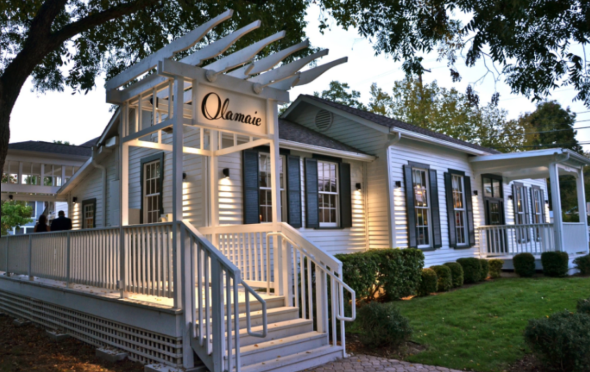

History
Austin, also known as one of the best new cities to live in, has not always been the booming town we know and love. Originally named Waterloo, immigrants from Germany, Sweden, and Mexico occupied this settlement. After a large population growth, Austin was renamed and declared the capital in 1839. During the 1850s-1880s, Austin began constructing many of the buildings we still see today; like the Capitol Building, The University of Texas at Austin and even the famous Driskill Hotel.
One of Austin's famous aspects is the music scene. Also known as "The Live Music Capital of the World," Austin's live music grew during the 1920s, 1930s, and 1940s. In the 1960s, 6th street opened and showcased many live music venues for up and coming musical artists. Ranging from Folk to country to reggae to rap, Austin is still exhibiting lively music. This city's love for music is especially shown in its annual music festival called Austin City Limits. Also known as ACL, this outdoor concert showcases many popular artists in Zilker Park.
In the 1960s many major companies began to station their headquarters in Austin. Some of these companies included IBM, Motorola, and Texas Instruments. This focus on technology is still seen today with many startup companies setting roots in this thriving city. Austin is well known for being a tech-savvy city. Austin was rated the number one city to start a business.
Another famous festival that draws in visitors from all over the world is South by Southwest. SXSW not only showcases live music it also honors film industries.
Culture
Similar to showcasing different mediums of art, Austin prides itself on the celebration of different cultures, and ethnicities. The strong historical ties Texas has with Mexico has led the city to have a strong Latino presence. This is shown through local food, museum, events, and associations. Some attractions that showcase this strong presence is the Mexic-Arte Museum. This display, which is located downtown, offers year-round exhibitions in contemporary Latin American art and culture.
Although this city is mostly known for its Latino presence, the African American community is thriving in East Austin. The Six Square, which is one of the largest cultural districts in the country, hold many historically significant sites through exhibits, performances, festivals and other events. One famous cultural center is the Ballet Afrique, which was started in 2008 by China Smith. This dance academy showcases professional dance companies and teaches youth through contemporary dance.
Not only does ATX celebrate all races, it also pushes to be accepting of all peoples, including the LGBT community. Most cities have a well known "gay district," but Austin is famous for being truly inclusive of all its residents. The LGBT community is well known for rebuilding and revitalizing Austin neighborhoods. Some famous additions include Hotel San Jose, the neighborhood around South Congress Avenue, and Lick’s Ice Cream.
Activities
Austin is known for their exciting outdoor activities such as kayaking and paddle boarding. One of the most popular places in Austin for these activities is at Rowing Dock. Rowing Dock provides kayak, canoe, stand-up paddle board, fishing kayak, and sup jet rentals. They also provide fun events for visitors, including full-moon paddle board tours and “yappy hour” for pets! Rowing Dock is located at 2418 STRATFORD DRIVE AUSTIN, TX 78746. Though there are multiple companies that provide these fun services, we highly recommend stopping by Rowing Dock and enjoying all they have to offer!
Another fun activity in Austin is visiting Congress Avenue. Congress Ave is home to multiple restaurants, bars, and shops. This popular street attracts residents and tourists because of the unique restaurants and antique shops. There is also live music, artisan markets, and food trucks that take place in this area.
One of the popular shops to visit on Congress Ave is Big Top Candy Shop. The Big Top Candy Shop is known for their old fashioned ice cream and soda fountain, but the store is also packed full of every type of candy. This popular shop is a great example of all the interesting aspects Congress Ave has to offer.

Restaurants
There is an endless list of amazing and popular restaurants in Austin, but in order to narrow down the list here are a few fan favorites.
Of course the majority of Tex Mex cuisine in Texas is pretty amazing, but Valentina’s Tex Mex BBQ restaurant in Austin is unbelievable. This restaurant combines two of the most sought after types of cuisine into an unforgettable meal. Valentina’s sells breakfast, lunch, and dinner and is most well-known for their barbacoa tacos.Valentina’s Tex Mex BBQ is located at 11500 MANCHACA RD, AUSTIN, TX 78748 and we highly recommend visiting!
It is no surprise that southern fare is popular in Austin, but these restaurants capitalize on their unique meus, remarkable designs, and specialized teams. A great example is Holy Rollers, the all-female staff is dedicated to serving amazing brunch and intriguing cocktails to all visitors. Their food menu is mostly southern comfort food and their drink menu has a wide variety of hilariously named delicious cocktails. Holy Rollers is located at 509 Rio Grande St. Downtown.
Another popular southern cuisine restaurant is Olamaie. Olamaie takes classic southern dishes and adds a twist. For example, their skillet cornbread is very popular and so is their ranger cattle beef tartare. They are also known for their amazing exterior and interior design. The breathtaking design attracts many visitors. Olamaie serves dinner 7 days a week and is located at 1610 SAN ANTONIO STREET.
As stated earlier in the activities section, Congress Ave has multiple popular restaurants we suggest visiting! One notable restaurant is Caroline Restaurant, they serve breakfast, brunch, lunch, and dinner. This pet-friendly restaurant has tasty and creative food and cocktail menus. Caroline is located at 621 Congress Suite 101 Austin, TX 78701.